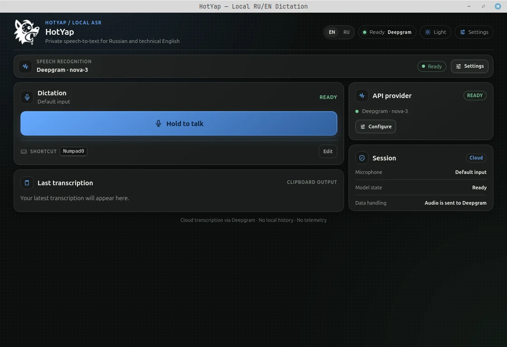

RU + EN
Two languages. One thought.
Dictate in Russian with English technical terms. Recognition context helps preserve names like TypeScript, Docker and useEffect.
RUSSIAN + ENGLISH / VOICE DICTATION
Russian sentences. English technical terms. Dictate tasks, messages and AI prompts — HotYap helps keep your stack’s vocabulary in the transcript.
 LOCAL FIRST — YOUR DESKTOP
LOCAL FIRST — YOUR DESKTOP
«Проверь useEffect и обнови Docker-контейнер»
01 / FAMILIAR LANGUAGE. NEW INPUT.
RU + EN
Dictate in Russian with English technical terms. Recognition context helps preserve names like TypeScript, Docker and useEffect.
LOCAL
In local mode, speech recognition runs on your computer. No recording history or telemetry.
PUSH TO TALK
Start recording with a global shortcut. The result goes to your clipboard, ready for a message, document or editor.
02 / YOUR NEXT DESKTOP TOOL
A task for a colleague, a message for your team or a prompt for an AI assistant. Say it, then paste the transcript where you work.
See how it works ↗
03 / THREE STEPS TO TEXT
Default shortcut. Change it in the app.
Use the configurable shortcut or the recording button.
Release the shortcut when you finish. HotYap transcribes the recording.
Paste from the clipboard wherever you need the text.
04 / KEEP CONTROL
Choose a model that suits your computer and your tasks. Download and manage it directly in HotYap.

The details
Yes. Download a local model once, then use local recognition without an internet connection. Cloud recognition and external text processing require access to the selected provider.
No. Local models can run on the CPU. A compatible NVIDIA GPU with CUDA can accelerate recognition. Speed depends on your hardware and the model you choose.
Audio is sent when you choose a cloud speech provider. If you enable external text post-processing, the transcript is also sent to that provider. Both are optional; API keys are stored in the operating system’s credential store.
Installers are unsigned. Linux is the primary tested platform; Windows and macOS builds need broader testing. On Linux Wayland, use the recording button if the global shortcut is unavailable.
Get started
Install HotYap, download a model and try your first dictation.
Choose a download ↗Early alpha · Unsigned installers
Linux is the primary tested platform. Windows and macOS builds are available for early testing.